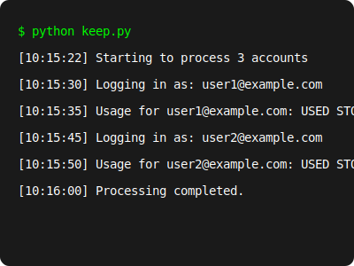

megakeep-py is a Python script that logs into your MEGA accounts periodically to prevent them from being deleted due to inactivity.

Features
Account Monitoring
Check storage usage and account status for multiple MEGA accounts.
Batch Processing
Process multiple accounts from a simple text file.
Detailed Logging
Comprehensive logs to track all account activities.
Error Handling
Robust error handling with retry mechanisms.
How to Use
# Install requirements
# brew install --cask megacmd //for macos
# sudo apt-get install megacmd //for linux
# for the rest: https://mega.io/cmd
# Edit accounts_example.txt with your accounts
# Format: email@example.com:password
# Run the script
python keep.pyFor more detailed instructions, check out the GitHub repository.